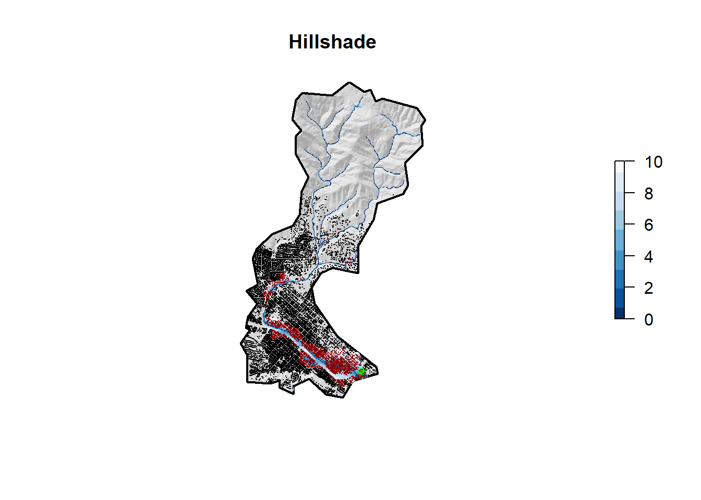

Flood Risk in Mission Creek: Past, Present, Future
Terrain analysis using OSM and Whitebox
Angus Watters -
library(tidyverse)
library(sf) # vector manipulation
library(raster) # raster manipulation
library(fasterize) # "faster" raster
library(whitebox) # terrain analysis
library(AOI)
# Data libraries
library(osmdata) # OSM API
library(elevatr) # Elevation Web Tiles
# USGS Mission Creek, Santa Barbara gage data
basin = read_sf("https://labs.waterdata.usgs.gov/api/nldi/linked-data/nwissite/USGS-11119750/basin/")
write_sf(basin, dsn = "../data/USGS-11119750.gpkg")Background
Mission Creek begins at Rattle Snake Canyon, runs through Santa Barbara, and drains into the ocean. The basin has flooded on several occasions causing damage to structures situated along the basin. Data is sourced from a USGS gage using the USGS Network Linked Data Index.
Estimated Impacts of flooding on structures along Mission Creek
